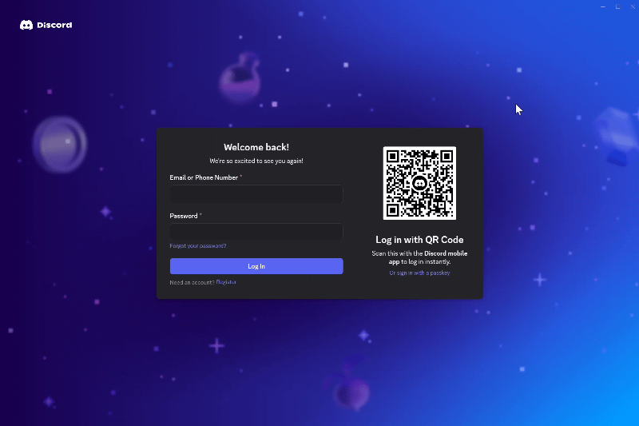
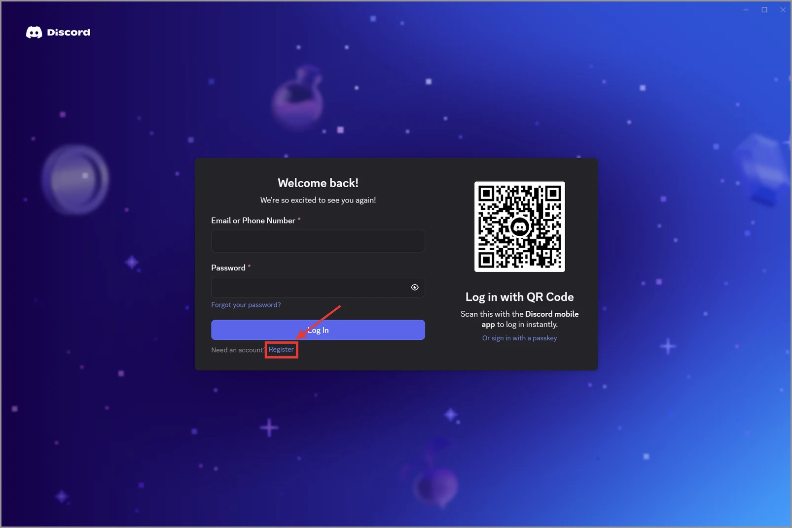
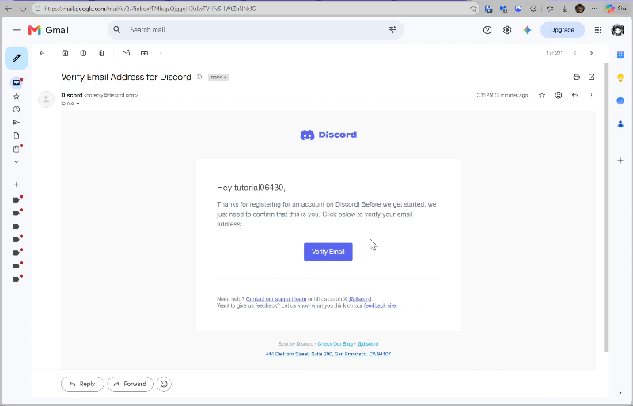

Subsection 2.2
Signing Up and Verifying Your Email
Creating your account takes about five minutes. You will choose two names, so read the short explanation below before you start.
Choosing a username and display name
Discord asks you for two different names:
- Your username is unique, like an email address. It can use only lowercase letters, numbers, periods, and underscores.
- Your display name is the name teammates see next to your messages. It can include spaces and capital letters.
For school, use a display name your classmates and instructors recognize, such as your first and last name. You can still change it later.
Sign up
- Open the Discord app.
- On the login screen, click Register under the Log In button.

Figure 2.2.1: Accessing the create an account form after clicking register on the login screen - Type your email address.
- Type your display name.
- Type a username. If the name is taken, Discord asks you to choose another one.
- Type a password that you do not use for any other account.
- Select your month, day, and year of birth.
- Click Continue.
- Complete the CAPTCHA puzzle, such as checking the box next to I am human.
Result: Discord opens to your home screen, and a verification email is sent to your inbox.

Verify your email address
Discord will not let you join some servers until you verify your email address.
- Open your email inbox.
- Open the email from Discord with the subject Verify Email Address for Discord.
- Click Verify Email.

Figure 2.2.3: Opening the verification email and clicking Verify Email
Result: A web page opens that says your email is verified. You can close that browser tab and return to the app.